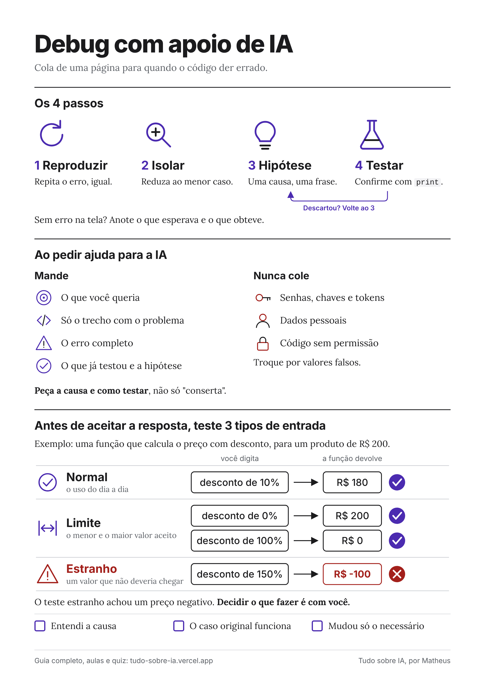

Trilha: Docência Digital na Era da IA
Depuração e resolução de problemas com apoio de IA
Aprenda a investigar erros de programação passo a passo e a usar uma IA sem aceitar tudo o que ela sugere.
Aula 1
Como estudar
- Confira os requisitos abaixo e abra o Google Colab em outra aba.
- Assista às quatro aulas na ordem. Pause nos trechos de código e reproduza no seu Colab. Marque cada aula como concluída.
- Leia o eBook. Ele repete o método das aulas, com exemplos e exercícios para você praticar.
- Guarde o infográfico. É uma página para ter ao lado quando o código der erro.
- Faça a avaliação interativa. Cada resposta traz um feedback explicando o porquê.
eBook: guia de consulta
Depois das aulas, use o eBook para revisar o método e praticar. São 16 páginas, com os 4 passos do debug, como ler um erro, os 5 erros mais comuns, como pedir ajuda à IA e 4 exercícios com gabarito.
Prefere texto selecionável e leitura com leitor de tela? Baixe o PDF.
Infográfico: debug com apoio de IA
Uma página para consultar na hora do erro. Mostra os 4 passos, o que mandar e o que nunca colar numa IA, e os 3 testes antes de aceitar a resposta.

Ler a descrição do infográfico em texto
Os 4 passos. 1 Reproduzir: repita o erro, igual. 2 Isolar: reduza ao menor caso. 3 Hipótese: uma causa, uma frase. 4 Testar: confirme com print. Se descartar a hipótese, volte ao passo 3. Sem erro na tela, anote o que esperava e o que obteve.
Ao pedir ajuda para a IA. Mande o que você queria, só o trecho com o problema, o erro completo, e o que já testou com a hipótese. Nunca cole senhas, chaves e tokens, dados pessoais, nem código sem permissão. Troque por valores falsos. Peça a causa e como testar, não só "conserta".
Antes de aceitar a resposta, teste 3 tipos de entrada. Exemplo: uma função que calcula o preço com desconto, para um produto de R$ 200. Normal (o uso do dia a dia): desconto de 10% devolve R$ 180. Limite (o menor e o maior valor aceito): desconto de 0% devolve R$ 200 e desconto de 100% devolve R$ 0. Estranho (um valor que não deveria chegar): desconto de 150% devolve R$ -100, um preço negativo, o que mostra um problema. Decidir o que fazer é com você.
Confira. Entendi a causa. O caso original funciona. Mudou só o necessário.
O que você vai aprender
- Reproduzir um erro de forma confiável, com os mesmos passos e o mesmo resultado.
- Formular hipóteses sobre a causa do problema antes de mexer no código.
- Compartilhar o contexto certo ao pedir ajuda a uma IA: código, erro e comportamento esperado.
- Validar a sugestão da IA com testes antes de aplicá-la.
Requisitos
- Lógica de programação básica: variáveis, condicionais e laços.
- Já ter escrito código em alguma linguagem. Não é preciso saber depurar.
- Um dispositivo com navegador e internet. Nada precisa ser instalado.
- Uma conta Google para executar o código no Colab, caso queira acompanhar a demonstração na prática.
Para quem é este minicurso
Para alunos iniciantes em programação que já entendem a lógica básica, mas ainda não têm um método para investigar erros e costumam pedir a uma IA que "conserte" o código sem entender a causa do problema.
Sobre o autor
Avaliação interativa
Sete questões de múltipla escolha sobre o que foi ensinado nas aulas. Cada resposta mostra um feedback imediato explicando por que está certa ou errada. Assista às aulas e leia o eBook antes de começar.
Referências
- ZELLER, Andreas. Why Programs Fail: A Guide to Systematic Debugging. 2. ed. Burlington: Morgan Kaufmann, 2009.
- PYTHON SOFTWARE FOUNDATION. Errors and Exceptions. Python 3 documentation. Disponível em: https://docs.python.org/3/tutorial/errors.html.
- GOOGLE. Google Colaboratory. Disponível em: https://colab.research.google.com/.
- ANTHROPIC. Prompt engineering overview. Disponível em: https://docs.claude.com/en/docs/build-with-claude/prompt-engineering/overview.